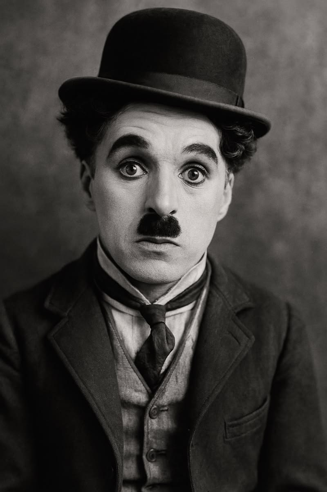

Actor • Filmmaker • Composer
Charlie Chaplin was a legendary English comic actor, filmmaker, and composer. He became one of the most important figures in the silent film era. He is best known for his famous character “The Tramp,” which made audiences laugh and feel emotion at the same time.
Charlie Chaplin remains one of the greatest and most influential figures in film history. His movies are still watched and appreciated worldwide.